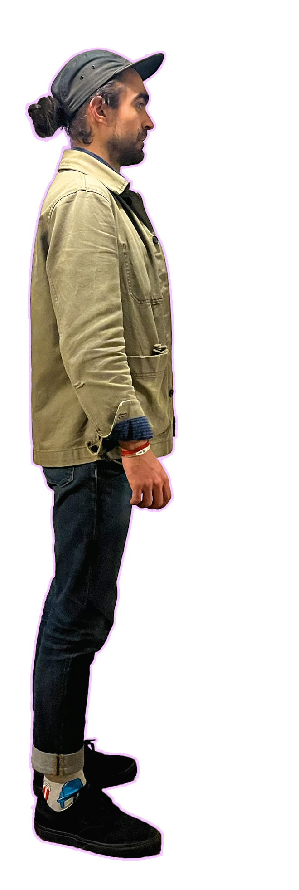
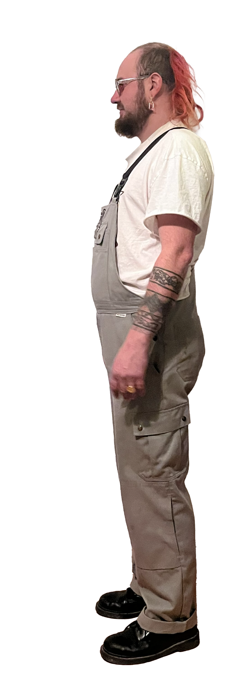

A SóLimó ötlete először Pestalits Ambrus fejéből pattant ki, aki régóta vágyott egy olyan koncepcióra, ahol egy mozgó színpad valósulhat meg. Az elképzelést 2024-ben vetette fel Kjartan Code-nak, aki már évek óta aktívan üzemelteti a Zsír Kulipintyó kocsmát és élőzenei bárt, valamint zenészként is nyitott minden izgalmas kezdeményezésre.
A projekt első bevetésére így már 2025-ben sor került. A mozgószínpad csapata több fesztivált is megjárt vele, amelyek közül kiemelkedik az utolsó Bánkitó, valamint a Népszínház utcai Járdafesztivál.
Azóta egyértelművé vált, hogy a SóLimó koncepció működik: az emberek élvezik, a csapat pedig töretlen lelkesedéssel viszi tovább a projektet.
